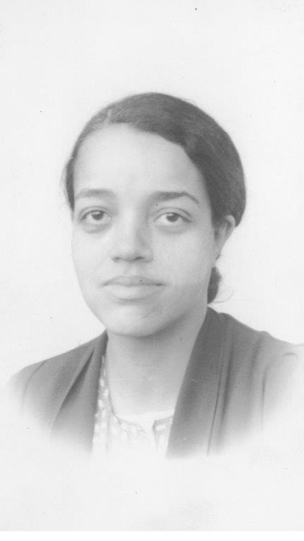

Um tributo às mulheres que contribuiram para o mundo da tecnologia
Ada Lovelace
DEZEMBRO 10, 1815 — NOVEMBRO 27, 1852
Foi uma matemática e escritora que em 1842 se tornou a primeira programadora da história ao acrescentar algoritimos para funcionamento de uma máquina mecânica.
A Ada criava algoritmos para serem processadas pela máquina, o que muitos consideram ser o primeiro software ou o primeiro programa de computador.
Ela escreveu várias notas sobre a máquina análitica e refletia sobre como o indivíduo e a sociedade se relacionariam com a tecnologia de forma colaborativa.
Dorothy Vaughan
1910 — 2008
Dorothy Vaughan formou-se em Matemática e ingressou na NACA, agência que viria a se tornar a NASA, em 1943.
Especializou-se em computação e seis anos depois chefiou um grupo composto somente por mulheres afro-americanas
formadas em matemática. Dominava computação eletrônica, programação e o processo operacional da primeira máquina
IBM usada pelo órgao governamental.

Carol Shaw
1955
Primeira mulher designer de games. Trabalhou na Atari, Tandem Computers e Activision. Seu cargo oficial na Atari era de Engenheira de Software
e ela atuou no projeto Atari Basic Reference Manual. Na Activision, Carol criou seu jogo mais famoso, o River Raid.